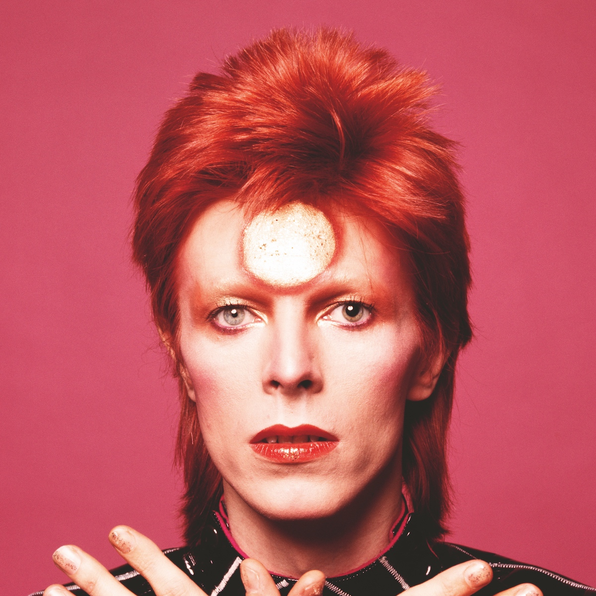
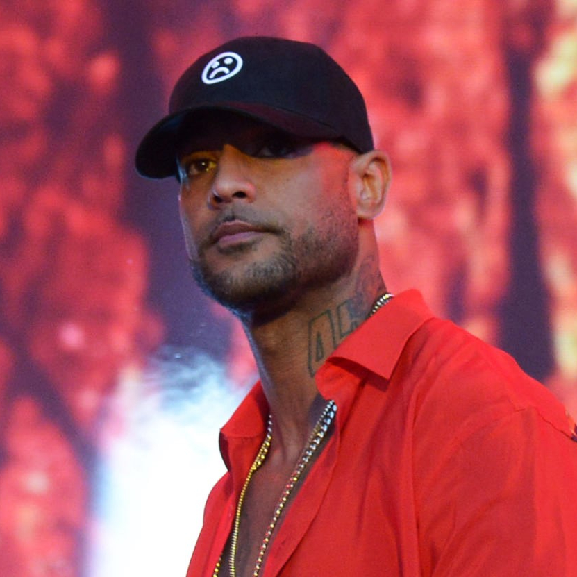
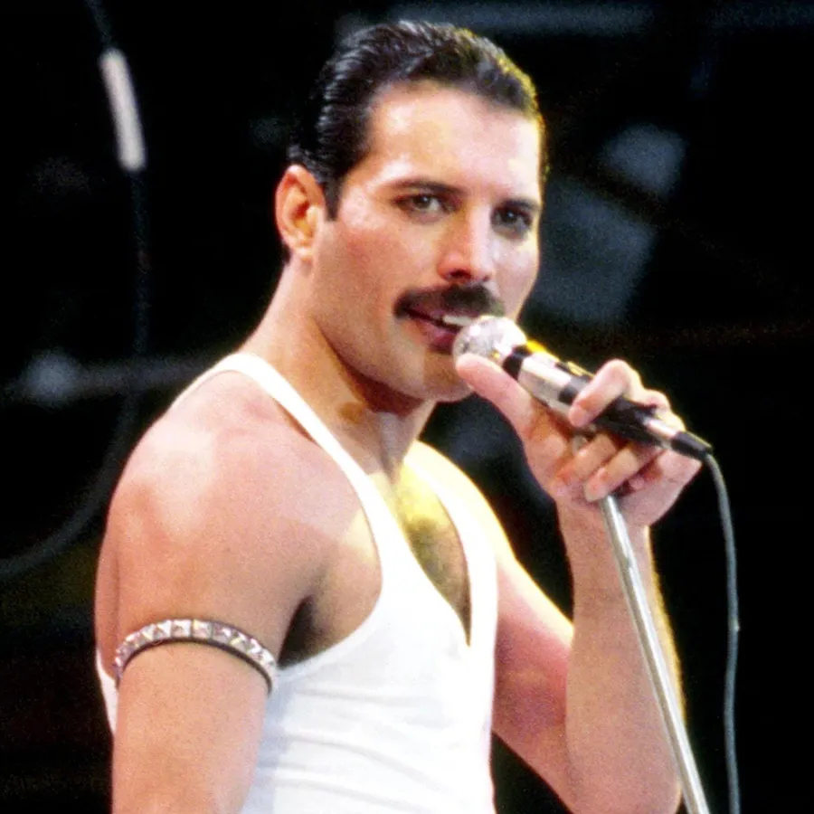
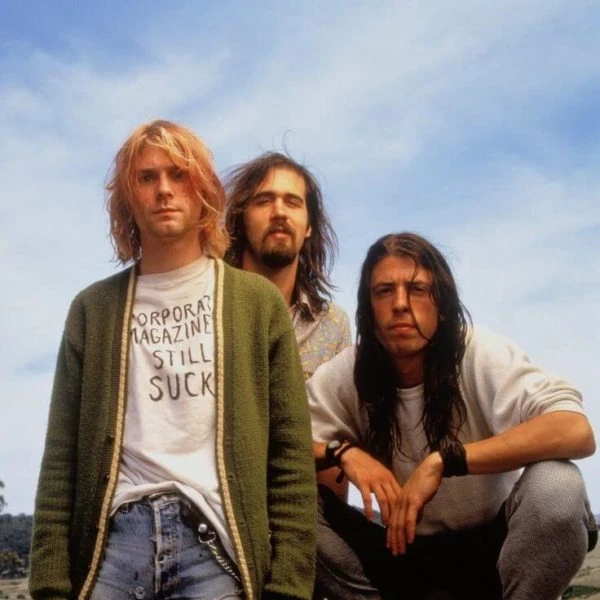
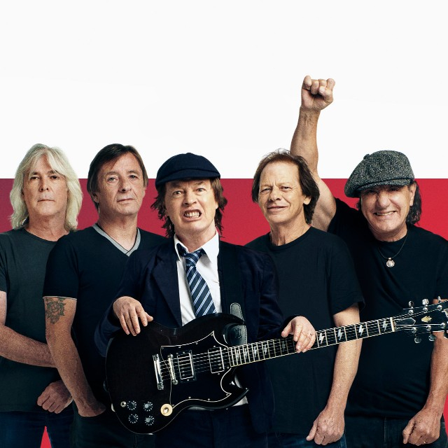
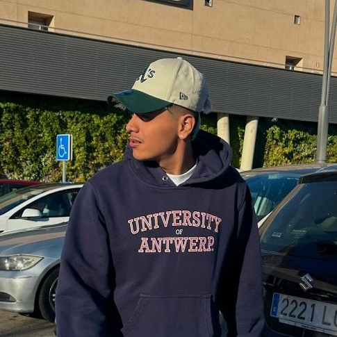
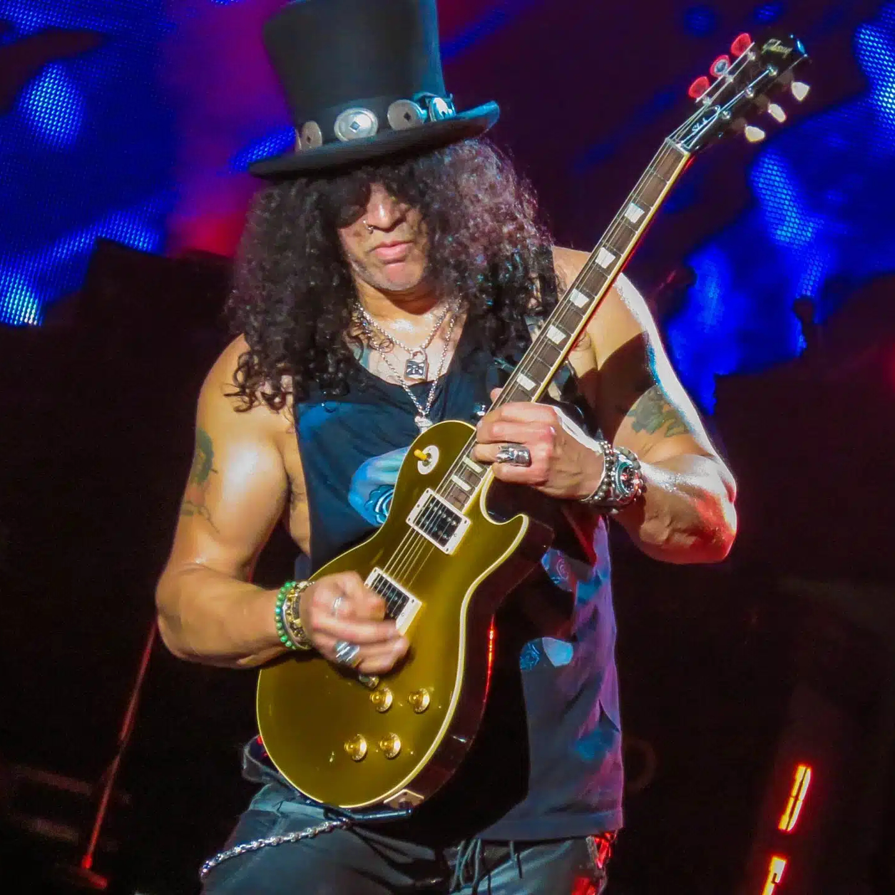
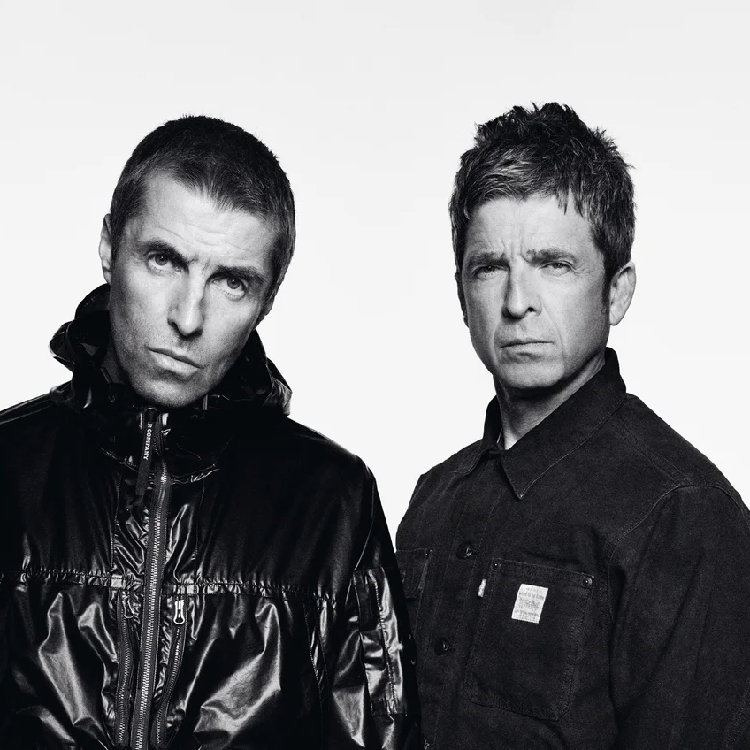

Lil Peep
Estilo: Rap/Emo
Lil Peep (Gustav Elijah Åhr, 1996-2017) fue un rapero y cantante estadounidense que combinó emo y rap con una autenticidad cruda. Canciones como "Star Shopping" y "Awful Things" exploran temas como la angustia emocional, el amor y la adicción. Su muerte prematura lo convirtió en un símbolo de la lucha contra los problemas de salud mental en la música.
Depresión Sonora
Estilo: Postpunk
Depresión Sonora es el proyecto en solitario de Marcos Crespo, que desde 2020 se ha convertido en una referencia del postpunk en español. Con temas como "Ya no hay verano", aborda la alienación, el desencanto juvenil y las emociones introspectivas, fusionando sintetizadores melancólicos con un estilo vocal distintivo.
Post Malone
Estilo: Rap/Pop
Post Malone (Austin Richard Post, nacido en 1995) es un cantante, rapero y productor estadounidense conocido por su capacidad para mezclar géneros como el hip-hop, pop y rock. Con éxitos como "Sunflower" y "Circles", ha ganado múltiples premios y es reconocido por su estilo único y colaboraciones con artistas como Swae Lee y Ozzy Osbourne.
Richard Cheese
Estilo: Jazz
Richard Cheese (Mark Jonathan Davis) es un artista estadounidense que ha ganado fama por sus versiones en estilo lounge y jazz de canciones populares. Con álbumes como "Lounge Against the Machine", ofrece un enfoque humorístico y teatral a temas de artistas como Nirvana, Metallica y Radiohead.

David Bowie
Estilo: Rock/Pop
David Bowie (1947-2016) fue un visionario del rock y el pop, con una carrera de más de cinco décadas. Creó personajes icónicos como Ziggy Stardust y dejó un legado musical con álbumes como "Heroes" y "Blackstar". Su influencia trasciende la música, impactando la moda, el cine y la cultura.

Booba
Estilo: Rap
Booba (Élie Yaffa, nacido en 1976) es un rapero y empresario francés que revolucionó el rap francófono con su estilo directo y producción innovadora. Canciones como "DKR" lo han llevado a consolidarse como una figura clave en la música urbana en Europa.

Queen
Estilo: Rock
Queen es una banda británica formada en 1970, conocida por su virtuosismo musical y la voz inigualable de Freddie Mercury. Con temas inmortales como "Bohemian Rhapsody" y "We Are the Champions", redefinieron el rock con su teatralidad y diversidad sonora.

Nirvana
Estilo: Grunge
Nirvana, liderada por Kurt Cobain, fue la banda que llevó el grunge al escenario global. Con "Nevermind" y canciones como "Smells Like Teen Spirit", se convirtieron en la voz de una generación, abordando temas de alienación y rebelión.

AC/DC
Estilo: Rock
AC/DC, formada en 1973, es una banda australiana de hard rock conocida por su energía explosiva. Temas como "Highway to Hell" y "Thunderstruck" han cimentado su estatus como una de las bandas más grandes del rock clásico.

Marlon Ruales
Estilo: Reguetton
Marlon Ruales es un artista de reguetón que ha alcanzado la cima de las listas de éxitos en España y América Latina. Sus letras suelen abordar temas de amor, fiesta y superación personal, consolidándose como una figura emergente del género.

Guns N' Roses
Estilo: Rock
Guns N' Roses, fundada en 1985, es una de las bandas más icónicas del rock. Con el liderazgo de Axl Rose y Slash, éxitos como "November Rain" y "Sweet Child O' Mine" los han mantenido en el corazón del público durante décadas.

Oasis
Estilo: Britpop
Oasis, formada en Manchester en 1991, fue una de las bandas más importantes del Britpop. Con álbumes como "(What's the Story) Morning Glor